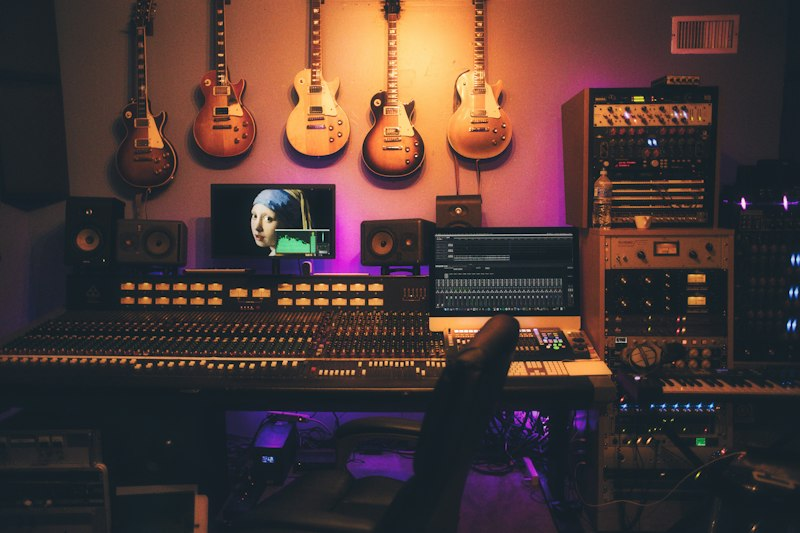

אולפן יצירה מוזיקלי - המקום שבו הרעיונות והצלילים מתעוררים לחיים
שלום לכולם! שמי ליאור, חובב מוזיקה מושבע ותלמיד לפיתוח אתרים ותכנות. מאז שאני זוכר את עצמי, עולם המוזיקה היווה עבורי מקור אינסופי של השראה, סקרנות וחיבור בין אנשים ותרבויות שונות.
אתר זה נבנה במסגרת פרויקט לבניית אתרי אינטרנט בשפות HTML5 ו-CSS3. מטרת האתר היא להנגיש מידע מרתק, היסטורי ומעשי על משפחות כלי הנגינה השונות בעולם:
בשלבים הבאים של הפרויקט, נמשיך להרחיב את האתר עם דפי מידע נוספים (פסנתר, כינור ועוד), נוסיף אינטראקטיביות מתקדמת, טפסי יצירת קשר וגלריית תמונות עשירה.
אני מקווה שתיהנו מהגלישה באתר ושתגלו עובדות חדשות ומעניינות על כלי הנגינה האהובים עליכם!